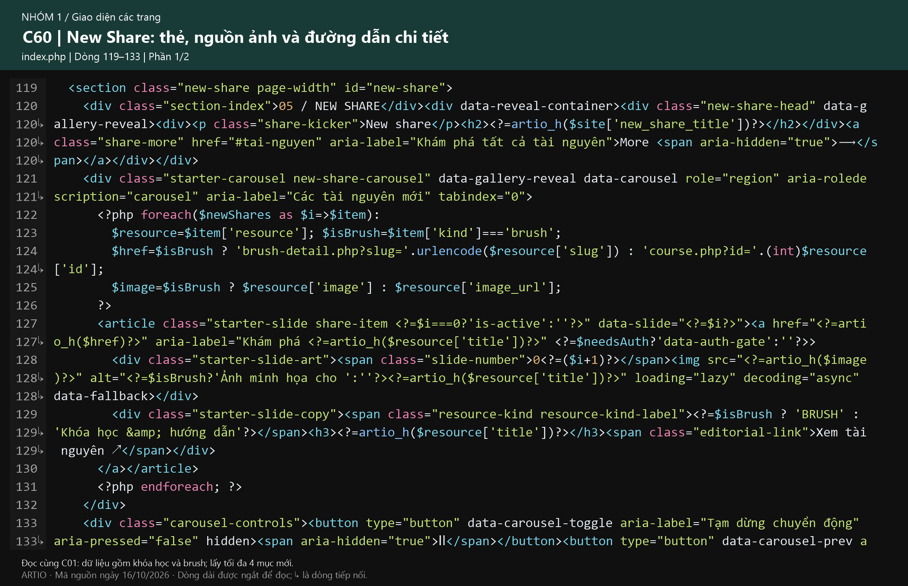
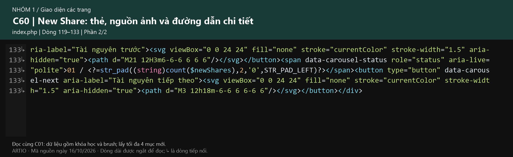

← Mục lục toàn bộ Tra hiệu ứng toàn website
Mở nhanh: Tài nguyên cho người mới · About ARTIO. Ảnh được dùng lại khi các khu vực dùng chung code; mã C/R giữ nguyên để đối chiếu.
Dải chữ LEARN / CREATE / EXPLORE
Chạy khi đứng yên, phản hồi khi cuộn, quay biểu tượng và các điều kiện tạm dừng.
- Bộ điều khiển dải chữ — C72
Bộ điều khiển dải chữ
C72 · Dải chữ: chạy liên tục và phản hồi khi cuộn
assets/landing.js · Dòng 295–389
Bao gồm dừng khi tab ẩn, giảm chuyển động, đo lại sau khi đổi kích thước.
Đoạn code gốc dạng chữ
C72 · Phần 1/4C72 · Phần 2/4C72 · Phần 3/4C72 · Phần 4/405 · Các tài nguyên mới / New Share
Gộp khóa học và brush, sắp theo ngày, lấy bốn mục mới; tạo thẻ, chuyển và tự chạy.
- Gộp, sắp xếp và lấy bốn mục — C01
- Thẻ, nhãn, đường dẫn và nút trước/sau — C60
- Chọn và chuyển tài nguyên — C16
- Tự chạy, tạm dừng và điều kiện — C73
- Zoom ảnh — C62
Gộp, sắp xếp và lấy bốn mục
C01 · Trang chủ: dữ liệu và nhóm tài nguyên
index.php · Dòng 1–23
Chỉ nơi lấy dữ liệu trước khi hiển thị trang chủ.
Đoạn code gốc dạng chữ
C01 · Phần 1/1Thẻ, nhãn, đường dẫn và nút trước/sau
C60 · New Share: thẻ, nguồn ảnh và đường dẫn chi tiết
index.php · Dòng 119–133
Đọc cùng C01: dữ liệu gồm khóa học và brush; lấy tối đa 4 mục mới.
Đoạn code gốc dạng chữ

C60 · Phần 1/2
C60 · Phần 2/2Zoom ảnh
C62 · Zoom ảnh trang chủ: thẻ, New Share và ảnh cuối
assets/landing.css · Dòng 384–394
Ảnh cuối dùng scale riêng để không tranh transform với chuyển động khi cuộn.
Đoạn code gốc dạng chữ
C62 · Phần 1/1 · Dòng trong ảnh: 384–394